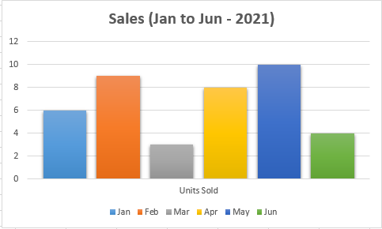
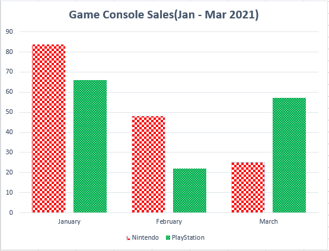

Colour
Overview – Colour
Colour enhances the design of Web content by increasing its aesthetic appeal, its usability, and its accessibility. As useful as it is, colour must not be the only way information is conveyed. Colour conveys information when it emphasizes text, distinguishes between visual elements, and distinguishes interactive elements from static elements. People who are colourblind, have low vision or are blind must be provided a text alternative of the information conveyed by colour. The same is true for those using text-only, limited colour, or monochrome displays.
To accommodate the needs of all, ensure colour is not the only way information is conveyed. Also, ensure your CSS colour design is customizable, so users can compensate for painfully bright and low contrast colours via the operating system or browser by applying a custom style sheet.
Information conveyed by colour
Information conveyed by colour must have an accurate text alternative.
Bad example: Coloured table data without text labels
In this bad example, colour alone communicates severity. There are no text labels. A legend / key below the table uses colour to define the severity values.
Example begins
| # of defects | Severity | Status |
|---|---|---|
| 20 | Open | |
| 30 | Closed | |
| 15 | In progress |
Red = High, Yellow = Medium, Green = Low
Example ends
Example begins
| # of defects | Severity | Status |
|---|---|---|
| 20 | Open | |
| 30 | Closed | |
| 15 | In progress |
Red = High, Yellow = Medium, Green = Low
Example ends
Example begins
| # of defects | Severity | Status |
|---|---|---|
| 20 | Open | |
| 30 | Closed | |
| 15 | In progress |
Red = High, Yellow = Medium, Green = Low
Example ends
Good example: Coloured table data with text labels
The table uses colours to convey information with text labels that ensure the meaning is perceivable.
Example begins
| # of defects | Severity | Status |
|---|---|---|
| 20 | High | Open |
| 30 | Medium | Closed |
| 15 | Low | In progress |
Example ends
Bad example: Error field indicated only with colour
In this bad example, the red text is the only indication of an error. Red and black are practically indiscernible for some users with colour blindness.
Also, the red text fails to meet the WCAG’s minimum contrast ratio requirement of 4.5:1 (basic red, or #FF000, has a contrast ratio of 4:1 with background white, #FFFFFF).
Finally, without additional semantic markup it would be impossible for screen reader users to identify the problem field.
Example begins
Please complete the fields marked in red
Example ends
Good example: Highlighted form field error with explanatory text
In this example, validation highlights an error with both a colourful background and explanatory text “Error 1: This field is required.”
Example begins
Example ends
Example begins
Example ends
This example is from WET guide: Form validation
Bad example: Colour alone communicates information
In the bad example below, the chart legend uses colour alone to identify the different bar columns.
Example begins
Example ends
Good example: Information communicated through colour and pattern
In the good example below, the chart legend uses colour and patterns to identify the different bar columns. The alternative text adequately describes the data conveyed in the bar chart.
Example begins
Alt text: Bar chart depicting game console sales in first 3 months of 2021: in January 84 Nintendo, 66 PlayStation; in February 48 Nintendo, 22 PlayStation; in March 25 Nintendo, 57 PlayStation.
Example ends
Bad example: Colour-coded information not communicated through alternative text
In the bad example below, the chart legend uses colour and patterns to identify the different bar columns. However, there is no alternative text for screen reader users.
Example begins
Example ends
HTML
Code begins
<img src="images/sales-to-march-2021.png" alt="">Code ends
Distinguishing links and controls from text
Users with low vision and colour blindness need to distinguish links and controls from neighbouring text. The easiest way to do this is with an underline on the link and a border on a control.
When colour is used as the only way to identify a link (meaning the underline has been removed) or a control, two conditions must be met:
- 3:1 contrast between the body text and the link text or control.
- A "visual cue" (not just a colour change) that appears on mouse hover and keyboard focus. The most common way to meet this is to underline the link on hover and focus, but you could also provide a background colour or border or outline.
Note that this is only an issue when the link or control and the body text appear together. It doesn’t apply to links or controls in the header or stacked in a menu, where they’re understood to be links or controls by their position on the page.
These requirements are in addition to the minimum contrast requirement of 4.5:1 between foreground text and background. It can be difficult to find a link or control colour that has both a 3:1 contrast with black body text and a 4.5:1 contrast with a white background. WCAG Technique G183 lists colour values that do, in Example 1.
Good example: Underline hyperlink text
In this example, the hyperlink text is differentiated from the surrounding normal text by underlining.
Example begins
The IT Accessibility Office (ITAO) remains to be a provider of adaptive technology and an advocate for inclusiveness of people with disabilities in the workplace.
Example ends
Good example: High contrast with a visual effect on hover and focus
This example avoids a static underline by:
- Using blue (#3333FF) as the link colour, which has
- a 3.1:1 contrast with neighbouring black text (just exceeds the minimum 3:1)
- a 6.9:1 contrast with the background white (well exceeds the minimum 4.5:1)
- As an additional visual cue on hover or focus, the link text is set in a very high contrast (21:1) of white against black background.
Example begins
The IT Accessibility Office (ITAO) remains to be a provider of adaptive technology and an advocate for inclusiveness of people with disabilities in the workplace.
Example ends
Results from the Colour Contrast Analyser


After receiving keyboard focus or mouse hover

Bad example: Colour alone distinguishes links from text
In this bad example, the blue foreground colour indicates that the last two icons are links. The blue has the required 3:1 contrast with the black of the neighbouring text, but it has no additional visual effect on hover or focus.
 A bright new idea
A bright new idea
 The latest model of Tesla
The latest model of Tesla
Good example: Border supplements colour to distinguish links from basic text
In this good example, the borders on hover and focus indicate that the last two icons are links.
Customization of interface colour and contrast
Some users with sensitivity to brightness or with low vision will expect to be able to modify colours. Whenever possible, use native controls and features of HTML. That allows users to customize interface colour and contrast for the visible UI components.
Good example: Button using CSS
In this example, the appearance of the button is set with CSS rules, including colours. The values are easily overridden by a custom user style sheet.
Example begins
Example ends
View the CSS
Code begins
.button-ex {
background-color: #0065CB;
border: none;
color: white;
padding: 10px 25px;
text-align: center;
text-decoration: none;
display: inline-block;
font-size: 36px;
margin: 4px 2px;
cursor: pointer;
}Code ends
Bad example: Button using an image of text
When buttons use an image of text, user style sheets are not able to customize the text properties, including foreground and background colours. Screen magnification pixelates and blurs images of text, diminishing readability.
Example begins
Example ends
HTML
Code begins
<button style="border: none; background: none;">
<img src="images/image17.jpg" alt="Next" class="img-responsive"/>
</button>Code ends
Related WCAG resources
Related WCAG resources
Success criteria
- 1.4.1: Use of Color
- 1.4.3: Contrast (Minimum)
- 1.4.11: Non-text Contrast
- 1.3.3: Sensory Characteristics
Techniques
- G18: Ensuring that contrast of at least 4.5:1 exists between text (and images of text) and background behind the text
- G145: Ensuring that a contrast ratio of at least 3:1 exists between text (and images of text) and background behind the text
- G182: Ensuring that additional visual cues are available when text color differences are used to convey information
- G183: Using a contrast ratio of 3:1 with surrounding text and providing additional visual cues on focus for links or controls where color alone is used to identify them
- G195: Using an author-supplied, highly visible focus indicator
- G207: Ensuring that a contrast ratio of 3:1 is provided for icons
- G209: Provide sufficient contrast at the boundaries between adjoining colours
Failures
- F13: Failure of Success Criterion 1.1.1 and 1.4.1 due to having a text alternative that does not include information that is conveyed by color differences in the image
- F73: Failure of Success Criterion 1.4.1 due to creating links that are not visually evident without color vision
- F81: Failure of Success Criterion 1.4.1 due to identifying required or error fields using color differences only